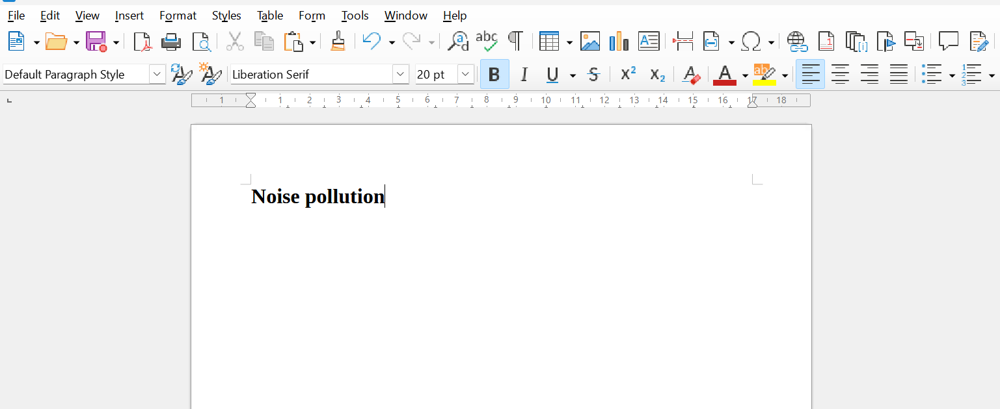
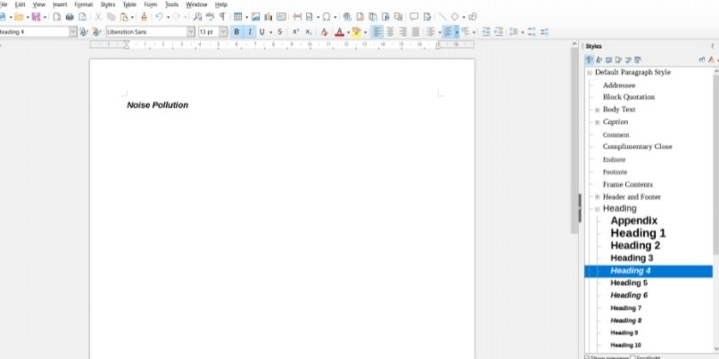
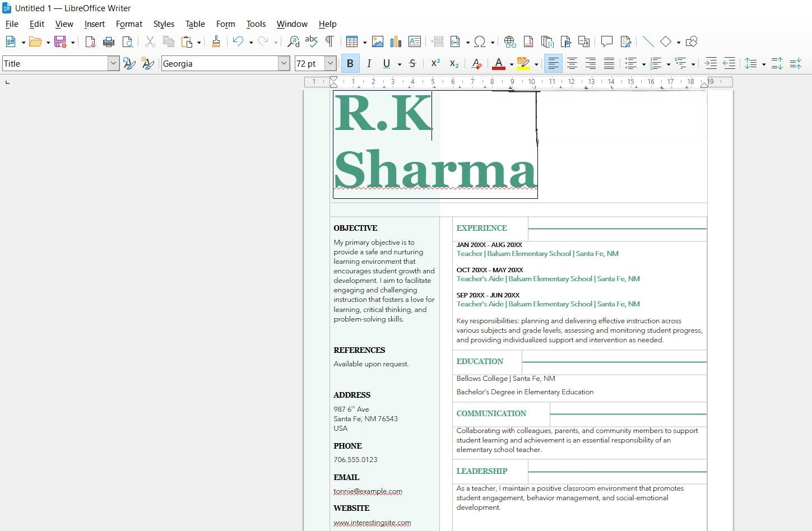
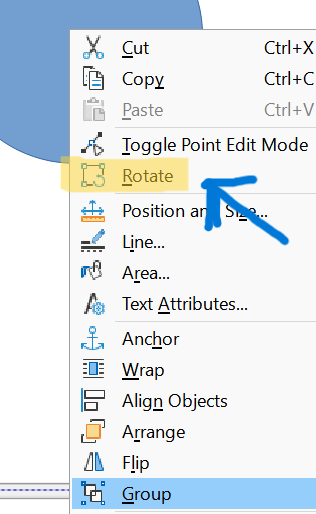

Assignments
Steps to Apply Heading Styles in LibreOffice
- Open your document in LibreOffice.
- Find the Stylist on the right side or press F11.
- Click on Paragraph Styles, it looks like a paintbrush icon.
- Look for Heading Styles named "Heading 1", "Heading 2", etc.
- Select the text "noise pollution".
- Double-click the desired heading style.
- Check if it applied correctly.
- Adjust if needed by right-clicking the style.
- Save your work.

Steps to Apply Page Style in LibreOffice
- Open 'noise.odt' in LibreOffice Writer.
- Go to the 'Format' menu at the top.
- Select 'Page Style' from the dropdown menu.
- In the 'Page Style' dialog box, choose the desired page style from the list.
- Click 'OK' to apply the selected page style.

Steps to Create Custom Paragraph Style in LibreOffice
- Open 'noise.odt' in LibreOffice.
- Access the 'Styles and Formatting' pane (F11).
- Click 'New Style from Selection' icon.
- Name your style as 'myStyle'.
- Optionally, adjust formatting.
- Apply 'myStyle' to desired paragraphs.
- Save your document.
Inserting an Image in "noise.odt" using Insert Image Dialog Box:
- Open "noise.odt" in LibreOffice Writer.
- Place the cursor at the location where you want to insert the image.
- Go to the "Insert" menu at the top of the window.
- Select "Image..." from the dropdown menu. This will open the "Insert Image" dialog box.
- In the dialog box, navigate to the location where the image file is stored on your computer.
- Select the image file you want to insert and click the "Open" button.
- The selected image will be inserted into the document at the cursor position.
- You can resize or reposition the image as needed by clicking and dragging the handles around the image.
- Once you're satisfied with the placement of the image, save the document to retain the changes.
Inserting an Image from "typewriter.odt" to "documentation.odt" using Clipboard:
- Open "typewriter.odt" in LibreOffice Writer.
- Locate the image of the typewriter that you want to copy.
- Click on the image to select it.
- Copy the image by pressing Ctrl + C on your keyboard or by right-clicking the image and selecting "Copy" from the context menu.
- Open "documentation.odt" in LibreOffice Writer.
- Place the cursor at the location where you want to insert the image.
- Paste the image by pressing Ctrl + V on your keyboard or by right-clicking and selecting "Paste" from the context menu.
- Resize or reposition the image as needed by clicking and dragging the handles around the image.
- Once you're satisfied with the placement of the image, save the document to retain the changes.

Insert and Rotate an Image in LibreOffice Writer
- Open your document in LibreOffice Writer.
- Place the cursor where you want to insert the image.
- Go to the "Insert" menu and select "Image...".
- Navigate to the image file, select it, and click "Open".
- Click on the inserted image to select it.
- Right-click the image and select "Rotate or Flip".
- Use the rotation options to adjust the image.
- Save the document.

Steps to Draw a Family Tree in LibreOffice Draw
- Open LibreOffice Draw and start a new document.
- Select the "Rectangle" tool from the drawing toolbar to draw rectangles for each family member.
- Click and drag on the canvas to create a rectangle.
- Use the "Text" tool to add names inside the rectangles.
- Select the "Connector" tool to draw lines connecting the rectangles and show relationships.
- Arrange the rectangles and connectors to create the family tree structure.
- Customize the appearance by changing colors and fonts as needed.
- Save your document.